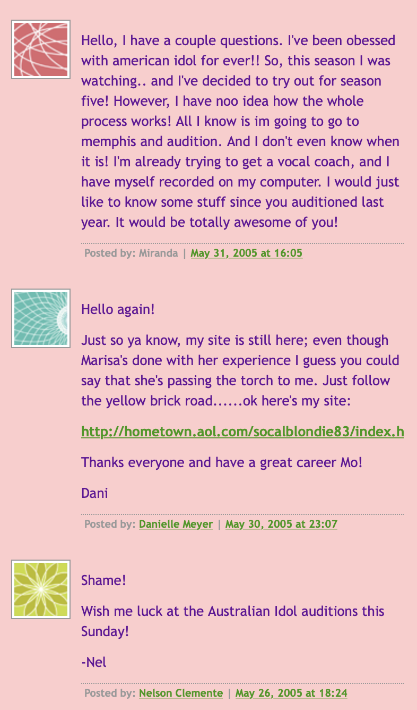
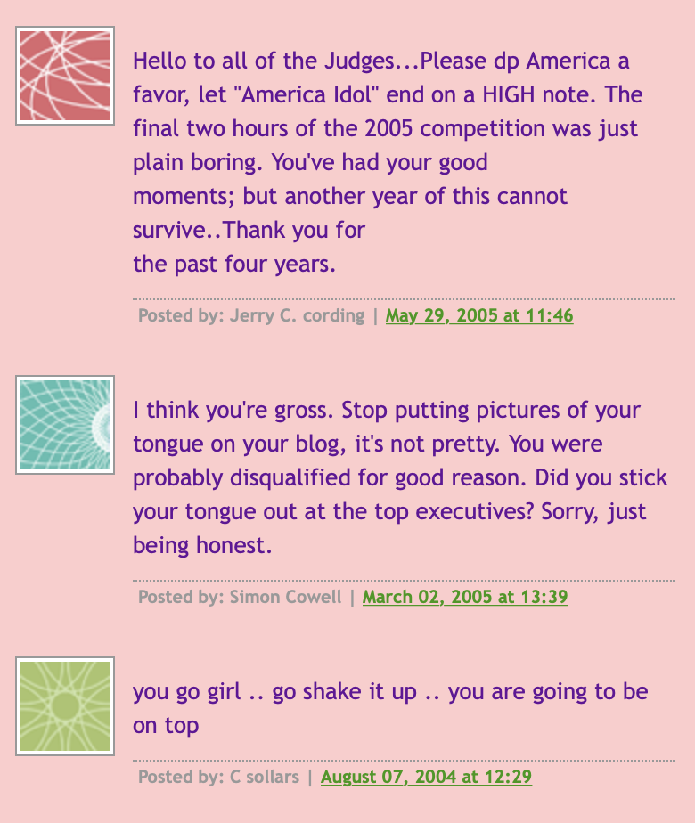
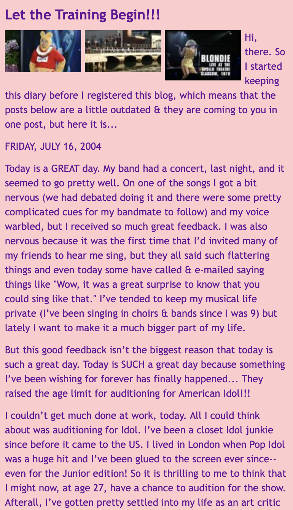
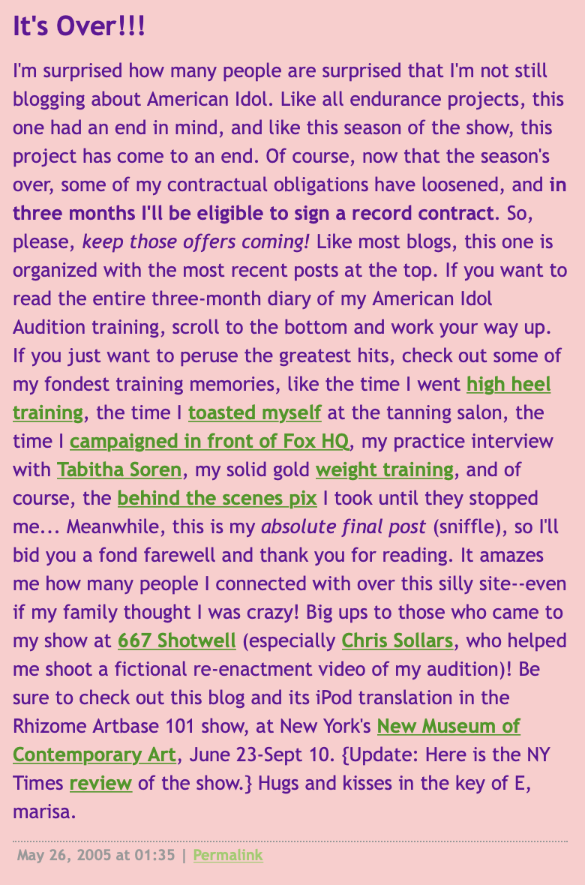
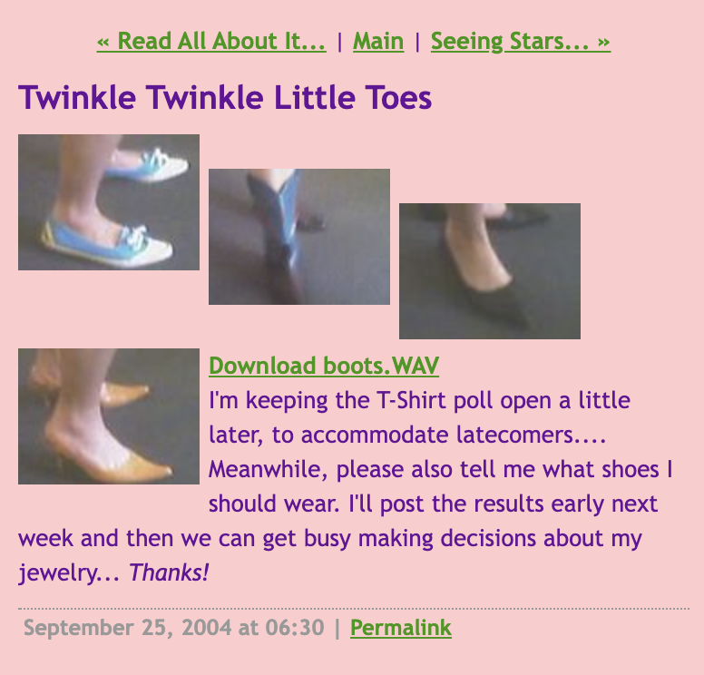
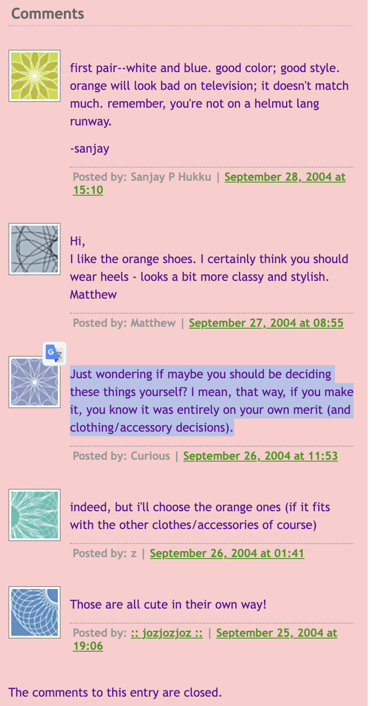
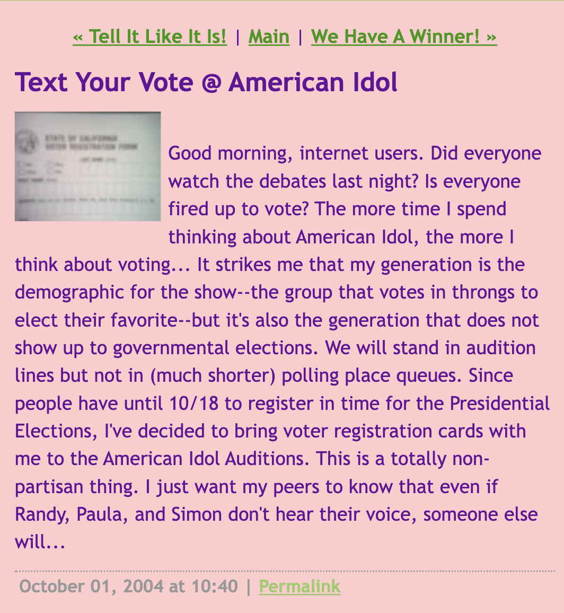
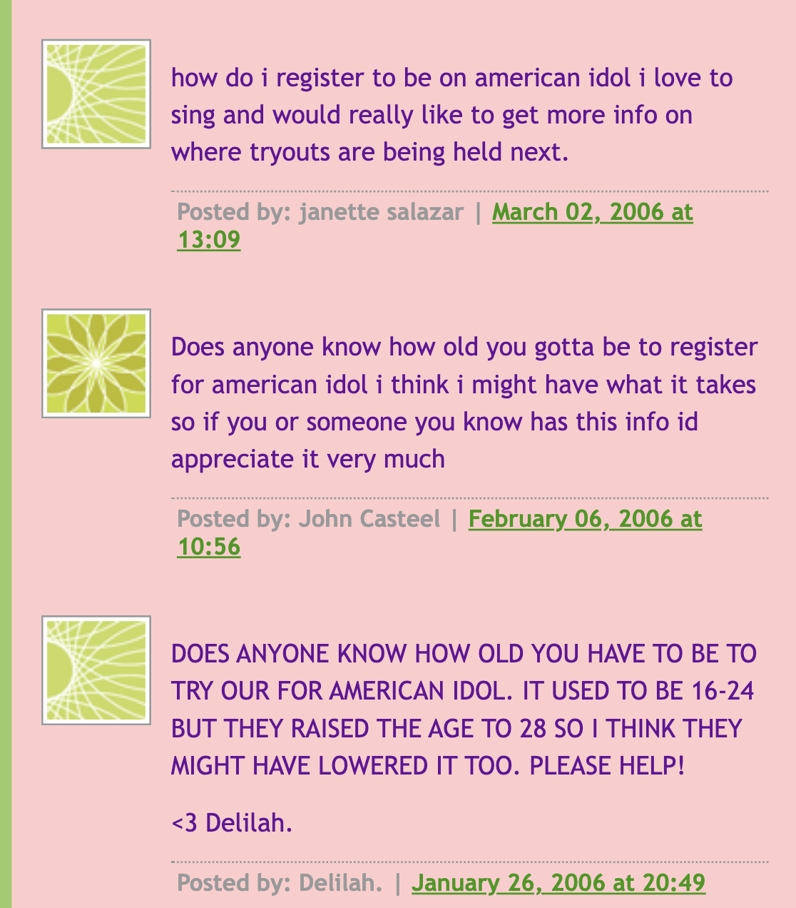
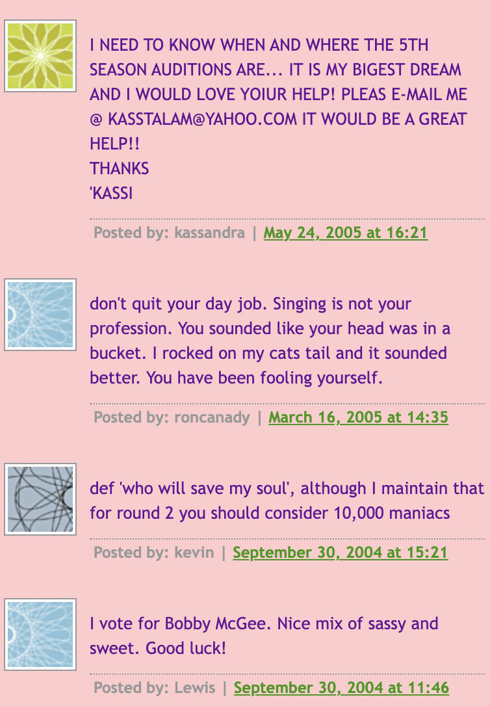
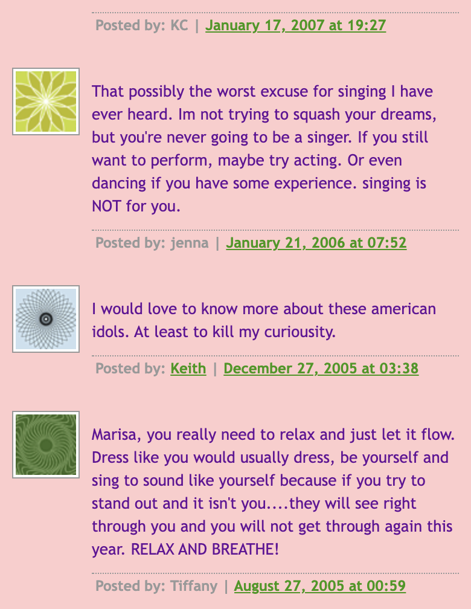

Thoughts from Stephen
This artwork is a great example of how to execute performance art through the internet. Performance art is an art form that combines visual art with dramatic performance. The artform usually has elements of change over time, along with a relationship between the artist and the audience. While reading through the blog, it felt like Marisa was taking on a persona and personally invited the audience along the American Idol journey with her. As a result, people started to comment and interact with the artwork in real-time.


Here, we see multiple comments. Throughout the blog's duration, there have been many comments asking questions, making fun of the project, and sharing words of encouragement.


These pictures show the first and last post of the blog. The last posts highlights how the blog always had a set duration: which was the length of the American Idol season.
Thoughts from Xinran
All together, Marissa’s journey and the audiences’ reactions remind me of Amusing Ourselves to Death by Neil Postman. In this era of rapid development of the internet and TV entertainment industry, information is dominantly delivered by the form of imagery instead of texts, and people seem to gradually lose the ability of critical thinking after they get used to this new medium of receiving information. Even though Marissa tried to arouse their attention towards the election, they seem to be indulged in the pleasure of entertainment. This made me think: how are this generation going to develop their independent thoughts and vote for the leader of the country while they don’t realize that they are judging people with shallow, biased standards?


While other blog readers passionately throw out their opinions on what Marisa should wear, this person seems to be an outlier.


Marissa brings the registration cards for the national election. Interestingly, the comments under this post are basically 2005 afterwards, while this blog was posted in October 2004. Even if the later comments are irrelevant with the proposal Marissa made in the post. People only care about the audition, when to watch and how to sign up.


After posting about vocal training, some gave Marissa warm encouragement and suggestions, some spoke mean about her voice - a possible warning sign for cyberbullying?